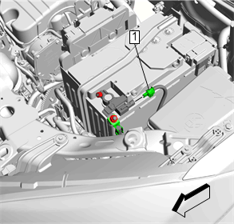
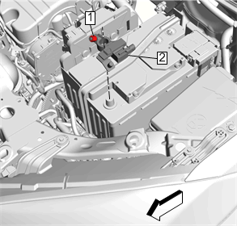

蓄电池传感器的更换
拆卸程序
- 1.打开收音机和录音机所有预先设置。
- 2.确保所有灯和存储器是关闭状态。
- 3.关闭点火开关并拔下点火钥匙。
-
4.断开电气连接器。（1）警告：有关蓄电池断开的警告
-
5.松开蓄电池负极电缆螺母的同时，用开口扳手(1)夹持蓄电池传感器搭铁凸耳。

- 6.蓄电池负极电缆螺母（3）@蓄电池传感器»拆下
- 7.蓄电池负极电缆（2）@蓄电池传感器»拆下
-
8.蓄电池传感器螺母（1）»松开
- 9.蓄电池传感器模块（2）@蓄电池»拆下
安装程序
- 1.蓄电池传感器模块（2）@蓄电池»安装
- 2.蓄电池传感器螺母（1）»安装并紧固至5N•m（44 lb in）
-
3.紧固蓄电池负极电缆螺母的同时，用开口扳手(1)夹持蓄电池传感器搭铁凸耳。告诫：有关紧固件的告诫
- 4.蓄电池负极电缆（2）@蓄电池传感器»安装
- 5.蓄电池负极电缆螺母（3）@蓄电池传感器»安装并紧固至12N•m（106 lb in）
- 6.连接电气连接器。（1）
- 7.编程所有客户收音机的预先设置并设置收音机的时间为当前时间。